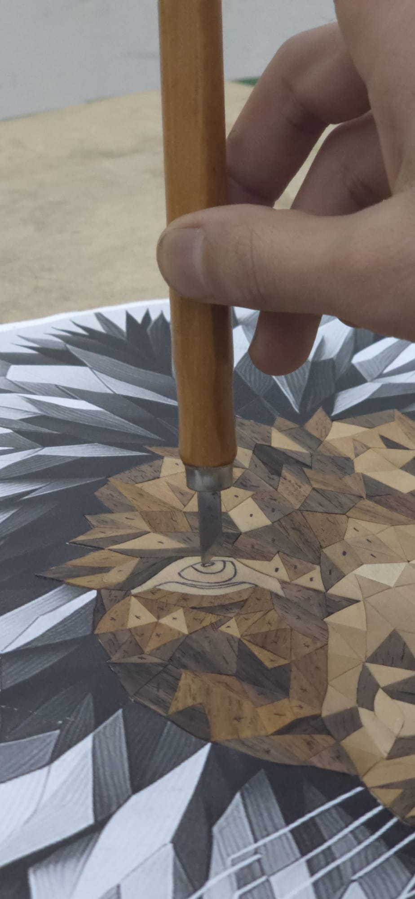

Sasun Sargsyan
Pise · Toscane · Italie
Né en 1991. Au travail depuis l’âge de neuf ans.
Origines
Sasun Sargsyan est né le 17 septembre 1991 à Erevan, en Arménie. À neuf ans, il commence à travailler le bois — non pas comme une leçon ni comme un exercice scolaire, mais parce que quelque chose dans la matière l’appelait. Sa précision. L’irréversibilité de chaque coupe. Il ne l’a plus quittée pendant les vingt-cinq années suivantes.
Formation
Après des études universitaires en Arménie, il fonde une véritable entreprise — qui fonctionne plusieurs années, puis s’arrête. L’échec lui apprend ce que la réussite n’enseigne pas : reconnaître ce qui demeure quand tout le provisoire disparaît. Pendant toutes ces années, le métier ne s’est jamais interrompu. Il n’a jamais été séparé de ce qu’il était.
Italie
Le conflit de 2020 en Artsakh interrompt la vie qu’il avait prévue. Il s’installe en Toscane en 2021 — avec une langue qu’il ne parle pas encore et une décision, prise en silence, sur ce qui compte. En Italie aussi, il fonde une entreprise. Elle aussi lui apprend quelque chose en fermant.
L’art comme vocation
En 2022, pour la première fois de sa vie d’adulte, il n’y a plus de place que pour l’œuvre. Ce qui avait commencé à neuf ans devient toute son identité professionnelle. Il réalise ses premiers grands portraits — non comme une découverte, mais comme une longue préparation qui trouve enfin sa place. En 2023, son travail est exposé en Italie. En 2024, il atteint Dubaï.
Pas un début tardif. Une longue préparation.
Aujourd’hui & demain
Il travaille dans un petit atelier à Pise, en Toscane. Toute la découpe est faite à la main. Sans laser. Sans gabarit. Sans assistant. Chaque œuvre de la collection a demandé entre quatre et six semaines de travail.
Il prépare un atelier de mobilier, vise les grands concours internationaux des métiers d’art et entend exposer dans de grandes galeries au Royaume-Uni et à l’international. Les commandes sont acceptées sur demande privée et commencent par une conversation.
« Le bois sait déjà ce qu’il veut devenir. Mon travail est de l’écouter. »
Sasun Sargsyan
Ce que savent les mains
Chaque coupe est faite à main levée. Chaque placage est choisi individuellement pour le sens de son fil, son ton et sa façon de retenir la lumière. Rien n’est répété, rien n’est approximatif.
Découpe à main levée — sans laser, sans gabarit

Chaque pièce choisie individuellement pour son fil et son ton

Construction en cours — le portrait apparaît pièce par pièce

Le sens du fil n’est pas un hasard — il fait partie de la composition

Examiné sous plusieurs éclairages avant le vernissage

Les outils : un couteau, un tapis et de la patience
Le bois pour palette
Aucun pigment. Aucune peinture. Toute la gamme des tons — des rehauts de frêne pâle aux ombres profondes du wengé — est la couleur naturelle du bois lui-même. Ce que vous voyez, c’est la matière.
- Objet
- Montrer le processus authentique, fait main, et les matériaux
- Recommandé
- 16:10 · 1600×1000px
- Statut
- En attente de vraies photos d’atelier
Le choix des placages — chaque essence porte sa propre lumière
- Objet
- Montrer le processus authentique, fait main, et les matériaux
- Recommandé
- 16:10 · 1600×1000px
- Statut
- En attente de vraies photos d’atelier
Une palette de tons entièrement naturelle — du frêne au wengé


World Art Dubai, Dubai World Trade Centre · mars 2024 — Voir toutes les expositions →
Reconnu par sa communauté
Le travail de VaCa Marquetry a été officiellement reconnu par la commune de San Giuliano Terme pour sa contribution à la vie culturelle et artistique italienne. Pour l’historique des expositions, consultez la page Expositions.

Reconnaissance municipale
San Giuliano Terme, Italie
La commune de San Giuliano Terme, à Pise — la communauté où travaille VaCa Marquetry — a officiellement reconnu la contribution de l’atelier à la vie culturelle et artistique italienne. Une reconnaissance de l’œuvre, et de la place qu’elle s’est faite.
Emballage & livraison
Chaque original quitte l’atelier dans un emballage de protection sur mesure, adapté à un transport international soigné. La présentation fait partie de l’expérience d’acquérir une œuvre VaCa Marquetry.
- Objet
- Montrer comment un original est protégé pour une livraison internationale
- Recommandé
- 4:3 · 1600×1200px
- Statut
- Photographie en attente
- Objet
- Montrer la présentation que reçoit un collectionneur
- Recommandé
- 4:3 · 1600×1200px
- Statut
- Photographie en attente
Un portrait réalisé
entièrement pour vous
Chaque commande commence par un échange privé et un aperçu offert de votre portrait, préparé sous 24 heures.
Commencer un portrait sur mesure